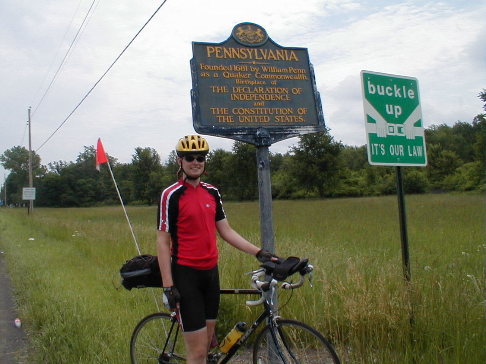

Day 39: June 20, Niles, OH to Erie, PAPrevious Day - Home - Next Day Photo of the DayMe at the Pennsylvania state line. Keegan's LogDay 39: June 20, Niles, OH to Erie, PA Mileage: 90.90 milesWeather: Mostly overcast, Relatively cool, Moderate winds from the east Vertical Climb: 1100 feet Riding Time: 6:00 After a stretch of long riding days, we were a little slow from the beginning of today's ride. After a quick breakfast at the hotel, we rode out of town over the same stretch dad and I had used to finish our century yesterday. There were a few other riders around, and before long we found ourselves in a pace line, which held together almost all the way to the first rest stop. The weather report said we would have thunderstorms, but we never did see any rain, only overcast skies and chilly air. The first 60 miles were almost due north, the easterly winds weren't too much of a factor as they went directly across our path. And good news at the first stop, I had no loose or broken spokes! Not long after the first sag dad and I turned off the route for a look at an old covered bridge. The bridge had been moved and now rested next to the river it had once spanned, it was originally from the 1900's but had had a lot of work done since then. After a few pictures, we headed back to the route. We ran into some hills as we progressed north toward Lake Erie, though we had a lot less climbing than yesterday. It was right about lunchtime when we rolled it to Conneaut (con-knee-yacht), a little town on Lake Erie. We stopped at a diner for lunch, about average as grilled ham and cheese sandwiches go. The sag was just a few blocks down the road at an outdoor root beer float stand, so we indulged in a dessert along with the other riders. Stomachs full, we moved along eastward toward Pennsylvania. The state line was only a mile down the road, everyone knows the drill by now. Dad had a flat on the way, his ninth, but luckily Pat was only a little way up the road. We entered Erie on highway 5, which had a nice bike path along the road, it was a nice ride into Erie all the way to downtown. From there it was only a few blocks to the hotel, a new high-rise in an old part of town. The rooms are nice and stately, a nice hotel all-in-all. Dinner was a free night tonight, so dad and I want with Chuck, Karen, Lynn, Ethel, and Don to a seafood restaurant on the pier over Lake Erie. They made us sit outside because we didn't have reservations, the breeze blowing off Lake Erie is still pretty cool this time of year, the food was a lot better than the glut of buffets we've been visiting. After our meal we walked down to the end of the pier while the sun was setting then walked back to the hotel. Tomorrow is our fifth and last rest day, and Erie looks like a nice town for a day off. Phil's LogCheck out tomorrow's entry... |
{kind=link}